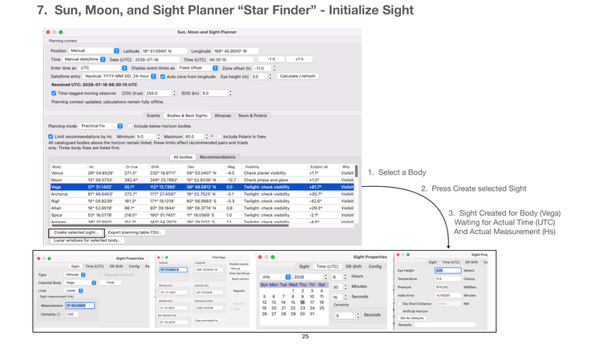

Previous | Contents | Next

7. Sun, Moon, and Sight Planner “Star Finder” - Initialize Sight
1. Select a Body
2. Press Create selected Sight
3. Sight Created for Body (Vega)
Waiting for Actual Time (UTC)
And Actual Measurement (Hs)
25